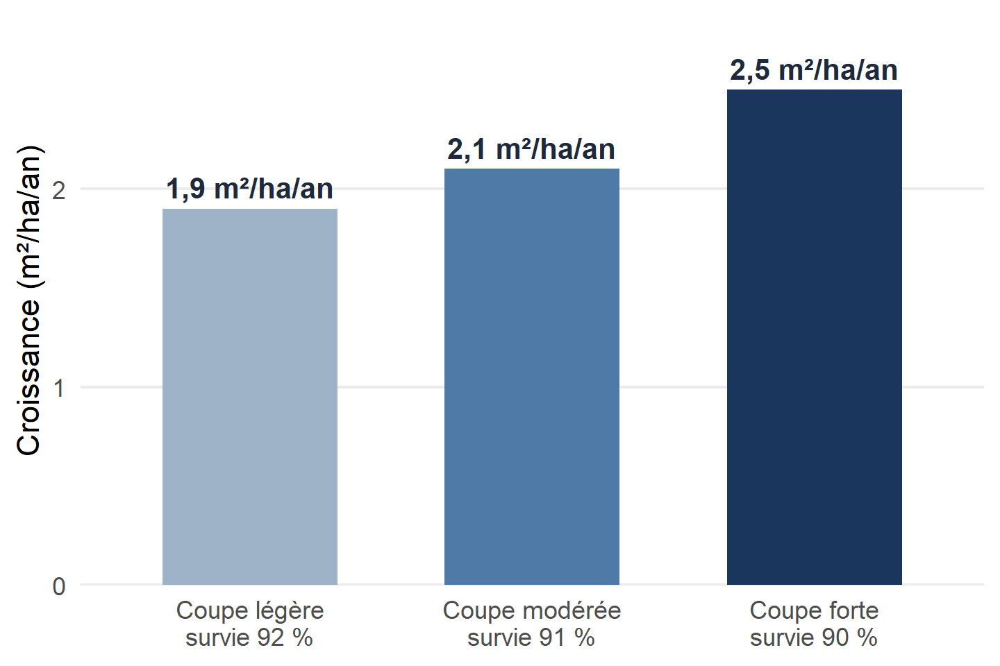

De ce que vous avez trouvé à ce que cela signifie
8 octobre 2026
De ce que vous avez trouvé
à ce que cela signifie
Une bonne discussion ne répète pas les résultats : elle leur donne du sens.
Pourquoi elle est difficile, et comment elle est construite
« La croissance du peuplement était de 2,5 m²/ha/an après une coupe forte. »
Pourquoi ?
Par rapport à quoi ?
Est-ce cohérent avec la littérature ?
Qu’est-ce que cela change ?
Elle est faible lorsqu’elle :
Contexte Problème Lacune Question / hypothèse
Résultat clé Interprétation Comparaison à la littérature Implications / nouvelles questions
🔁 La discussion revient aux questions posées dans l’introduction et y répond.
1 · Résultat principal Le message clé, en une phrase
2 · Réponse à la question Hypothèse appuyée, nuancée ou rejetée ?
3 · Mise en contexte Convergences et divergences avec la littérature
4 · Explications / mécanismes Pourquoi ce patron ? Quelles alternatives ?
5 · Implications Pour la science, la gestion, la décision
6 · Limites + conclusion Ce qui reste défendable, et le message final
Chaque étape découle de la précédente : une discussion n’est pas une liste de paragraphes indépendants.
Résultat
Qu’avons-nous observé ?
Interprétation
Qu’est-ce que cela signifie ?
Preuve
Pourquoi cette interprétation est-elle plausible ?
Portée
Jusqu’où pouvons-nous généraliser ?
🌲 Exemple : une croissance supérieure après une coupe forte ne prouve pas automatiquement que « la coupe améliore la croissance ». Il faut considérer la lumière, la compétition, l’humidité, la composition, l’âge, la station… et le dispositif expérimental.

L’intensité de la coupe influence-t-elle la croissance et la survie des peuplements ?
Données fictives, réutilisées tout au long de la présentation.
Répondre à la question, sans dire plus que les données
Mauvais départ
« Dans notre étude, les peuplements en coupe légère avaient une croissance de 1,9 m²/ha/an, ceux en coupe modérée de 2,1 m²/ha/an… »
Meilleur départ
« Nos résultats indiquent que la croissance augmentait avec l’intensité de la coupe, ce qui appuie notre hypothèse selon laquelle une plus grande disponibilité des ressources favorise la croissance des peuplements. »
🎯 Commencez par le message, pas par la liste de chiffres.
Résultats — Qu’avons-nous observé ?
« La croissance était de 2,5 m²/ha/an sous coupe forte, contre 1,9 m²/ha/an sous coupe légère. »
Rôle
Décrire, chiffrer, montrer les tendances et l’incertitude.
Discussion — Que signifient ces observations ?
« Ce gain d’environ 30 % suggère que la réduction de la compétition après une coupe forte libère des ressources pour les arbres résiduels. »
Rôle
Interpréter, comparer, expliquer, nuancer, situer.
Dans la discussion, un chiffre n’apparaît que s’il sert l’argument.
est associé à
Corrélation observationnelle
est cohérent avec
Concordance avec une hypothèse ou la littérature
suggère
Tendance, effet expérimental incertain
indique
Effet expérimental robuste
démontre
Effet répliqué et mécanisme testé
◀ Langage prudent Plus le verbe est fort, plus la preuve doit l’être Langage fort ▶
⚠️ Le risque n’est pas d’être prudent : c’est d’affirmer plus que ce que le dispositif permet.
1 · Association
Deux variables évoluent ensemble.
Exemple
Dans un inventaire, les peuplements plus ouverts croissent plus vite.
Verbes
est associé à, est corrélé à
2 · Effet causal
Un traitement contrôlé produit une différence (témoin, randomisation, répétitions).
Exemple
Dans un essai sylvicole, la coupe forte a augmenté la croissance.
Verbes
a augmenté, a entraîné, indique
3 · Mécanisme
Le processus intermédiaire a été mesuré et testé.
Exemple
La lumière mesurée sous couvert explique le gain de croissance.
Verbes
s’explique par, démontre (si répliqué)
« La survie était de 90 % sous coupe forte, contre 92 % sous coupe légère. »
Cela vient directement des données.
« Cette légère baisse pourrait refléter un stress hydrique accru après une forte ouverture du couvert. »
C’est une explication à évaluer.
💡 Utilisez pourrait, est compatible avec, suggère, une explication possible est lorsque le mécanisme n’a pas été directement testé.
Un résultat intéressant → une hypothèse explicative
Coupe plus forte → Plus de lumière par arbre → Moins de compétition (eau, nutriments) → Croissance accrue
Mesuré Non mesuré : hypothèse
Un mécanisme est une chaîne logique, pas un mot ajouté après le résultat.
⚠️ Si vous n’avez pas mesuré un maillon de la chaîne, présentez-le comme une explication plausible, pas comme une observation.
Littérature, résultats inattendus, implications et limites
Empilement de références
« Smith (2018) a trouvé X. Jones (2020) a trouvé Y. Lee (2021) a trouvé Z. »
Synthèse
« Nos résultats concordent avec plusieurs études montrant une augmentation de la croissance après l’ouverture du couvert (Smith 2018; Jones 2020; Lee 2021), mais l’ampleur de la réponse était plus faible que celle rapportée dans des stations plus humides. Cette différence pourrait refléter les conditions hydriques plus limitantes de notre site. »
Une référence doit soutenir, nuancer, contredire ou expliquer votre résultat. (Références fictives.)
Ne pas cacher. Ne pas « réparer » les données. Posez quatre questions :
🌲 Un résultat inattendu est souvent le meilleur endroit pour montrer votre raisonnement scientifique.
« Aucune différence de survie n’a été détectée entre les traitements. »
Science
Qu’est-ce que ce résultat ajoute à nos connaissances ?
Gestion
Qu’est-ce que cela pourrait changer dans la pratique ?
Décision
Dans quel contexte ce résultat pourrait-il être utile ?
🌲 Exemple : si la coupe forte accroît la croissance sans réduire notablement la survie, elle pourrait être envisagée là où la production de bois est l’objectif principal, mais seulement dans des stations comparables à celles étudiées.
Mauvais
« Notre étude a plusieurs limites. »
Meilleur
« Le suivi de cinq saisons limite notre capacité à conclure sur les effets à long terme. Cependant, la constance de la réponse au cours des quatre dernières années suggère que le gain de croissance n’est pas un effet transitoire. »
Limite → Conséquence → Importance → Ce qui compense / prochaine étape
| Situation | Effet possible sur l’interprétation |
|---|---|
| Petit échantillon | Incertitude plus grande |
| Suivi court | Effets à long terme inconnus |
| Un seul site | Généralisation limitée |
| Variable clé non mesurée | Mécanisme difficile à tester |
| Biais systématique plausible | Peut remettre en cause la conclusion |
🎯 La question n’est pas « avons-nous des limites ? », mais « quelles conclusions restent défendables malgré ces limites ? »
Une discussion n’est pas une liste d’excuses. Une force est utile lorsqu’elle change le niveau de confiance :
Le message que le lecteur emportera
La discussion…
La conclusion…
🚫 Aucun nouveau résultat, aucune nouvelle référence, aucun chiffre qui n’a pas déjà été présenté.
📄 Paragraphe final ou section distincte ? Vérifiez les instructions aux auteurs de la revue.
1 · Réponse
Qu’avons-nous appris ?
Réponse directe à la question de recherche.
2 · Portée
Dans quelles conditions ?
Station, durée, échelle, type de peuplement.
3 · Importance
Qu’est-ce que cela change ?
Une implication principale, pas cinq.
4 · Suite
Quelle est la prochaine question ?
Précise et réalisable.
Les phrases 1 et 2 sont essentielles ; 3 et 4 seulement si elles ajoutent quelque chose.
Dans des peuplements comparables et sur cinq ans, une coupe plus forte a accru la croissance d’environ 30 % sans réduire notablement la survie des arbres, ce qui suggère qu’elle peut accélérer la production de bois sans compromettre le peuplement à court terme. Un suivi à plus long terme permettra de vérifier si ce gain persiste après la fermeture du couvert.
Réponse Portée Importance Suite
Le test : quelqu’un pourrait-il reprendre cette phrase telle quelle dans son introduction ?
| ❌ Faible | ✅ Forte |
|---|---|
| « D’autres études sont nécessaires. » | « Un suivi de dix ans permettrait de vérifier si le gain de croissance persiste après la fermeture du couvert. » |
| « Cette étude démontre que la coupe forte est la meilleure stratégie. » | « Dans des stations comparables, la coupe forte offre un gain de croissance sans perte notable de survie à court terme. » |
| « Ces résultats ont d’importantes implications pour la gestion forestière. » | « Ces résultats peuvent guider le choix de l’intensité d’éclaircie là où la production de bois est l’objectif principal. » |
| « De plus, nous avons observé que la régénération… » | Ce résultat appartient aux sections Résultats et Discussion, pas à la conclusion. |
Écrivez votre discussion et demandez à un collègue :
« Quel est le message principal de mon étude ? »
S’il ne peut pas répondre en 30 secondes, le problème n’est peut-être pas vos données.
La discussion est l’endroit où vous expliquez pourquoi vos résultats méritent d’être connus.
Synthèse, exercices et liste de vérification
Résultat principal → Réponse à la question → Mise en contexte
→ Explications / mécanismes → Implications → Limites → Conclusion
Chaque paragraphe doit faire avancer ce raisonnement.
Résultat : la survie était de 92 %, 91 % et 90 % sous coupe légère, modérée et forte (n = 80 arbres par traitement).
A — « La survie était de 92 % sous coupe légère, de 91 % sous coupe modérée et de 90 % sous coupe forte. »
B — « La survie élevée et similaire entre les traitements suggère que l’intensité de coupe a eu peu d’effet sur la survie à court terme. »
C — « La coupe n’a aucun effet sur la survie. »
👉 B est la plus défendable sur la base de ce seul résultat : elle interprète sans dépasser la portée de l’étude. A répète ; C surinterprète.
« Les arbres en coupe forte ont crû 32 % plus vite que ceux en coupe légère. »
Écrivez quatre phrases :
💡 Une excellente discussion n’est pas celle qui utilise le plus de mots : c’est celle qui transforme le mieux les données en connaissance.
Questions ?
Source principale : Day, R. A. et Gastel, B. How to Write and Publish a Scientific Paper, 9e éd., chapitre sur la discussion.
Exemples pédagogiques et données fictives préparés pour l’enseignement de la rédaction scientifique.
Rédaction scientifique — La discussion
Comment intégrer une étude précédente
Soutient
Même direction
« Comme Smith (2018), nous observons… »
Nuance
Effet plus faible ou plus fort
« …mais l’effet était deux fois plus faible que celui rapporté par… »
Contredit
Direction différente
« Contrairement à Lee (2021), …, ce qui pourrait refléter… »
Explique
Mécanisme proposé
« Ce patron est cohérent avec le mécanisme proposé par… »
Une étude n’a pas besoin d’être d’accord avec vous pour être utile : une divergence est souvent le passage le plus intéressant.